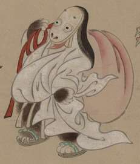

赤い宿直袋を担いだ女の化物。顔が下駄のような形をしている。袿の裾から獣のような足が見えている。女官のような格好である。
出典：親書誌：U426_nichibunken_0154：妖怪絵巻；ヨウカイエマキ／日付：2010／資源識別子：U426_nichibunken_0154_0008_0000
Copyright (c)2010- International Research Center for Japanese Studies, Kyoto, Japan. All rights reserved.